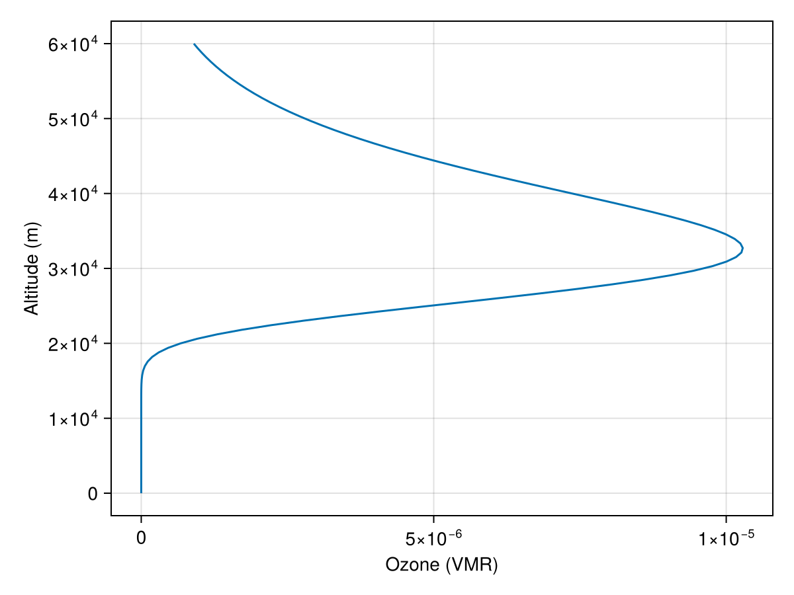

Trace Gases
ClimaAtmos implements two modes each for ozone and carbon dioxide: one time varying and one time invariant. These are only relevant for radiative transfer, and only when RRTMGP is used. All other atmospheric gases are held fixed with default values from RRTMGP that can be changed in the toml file. See Radiation for how the gas concentrations reach the solver, and Running with Radiation for the configuration keys.
Time Invariant Ozone Profile
The time invariant type of ozone uses the idealized_ozone function to compute an idealized ozone profile based on the work of [74]. This option is the default.
The idealized_ozone function returns the ozone concentration in volume mixing ratio (VMR) at a given altitude z.
ClimaAtmos.idealized_ozone — Function
idealized_ozone(z)Return the idealized ozone volume mixing ratio at altitude z [mol/mol], following the RCEMIP protocol of [74].
The profile is analytic in pressure,
\[O_3(p) = g_1 \, p^{g_2} \, e^{-p / g_3},\]
with p = P₀ exp(-z / H) in hPa (P₀ = 1000 hPa, scale height H = 7 km) and empirical constants g₁ = 3.6478, g₂ = 0.83209, g₃ = 11.3515 that yield ppmv, converted here to a volume mixing ratio.
Used as the ozone input to RRTMGP whenever ozone is not read from a time-varying dataset.
This function looks like
using CairoMakie
import ClimaAtmos
z = range(0, 60000, length = 100)
ozone = ClimaAtmos.idealized_ozone.(z)
fig = Figure()
ax = Axis(fig[1, 1]; xlabel = "Ozone (VMR)", ylabel = "Altitude (m)")
lines!(ax, ozone, z)
save("idealized_ozone.png", fig);
Time Varying Ozone Profile
The time varying ozone profile uses CMIP6 forcing data to prescribe ozone as read from files. A high-resolution, multi-year file is available in the ozone_concentrations artifact. This file is not small, so you have to obtain it independently. Please refer to ClimaArtifacts for more information. If the file is not found, a low-resolution, single-year version is used. This is not advised for production simulations. This option is enabled by adding "O3" to the time_varying_trace_gases config argument list, i.e.: time_varying_trace_gases: ["O3"].
We interpolate the file data in time whenever radiation is called. The interpolation used is LinearInterpolation from ClimaUtilities (linear in time between file snapshots).
Time Invariant CO2 Profile
By default, CO2 concentrations are set to 397.547 ppm. This value can be changed with the CO2_fixed_value parameter in the toml file.
Time Varying CO2 Profile
ClimaAtmos can prescribe CO2 concentration using data from Mauna Loa CO2 measurements. This option is enabled by adding "CO2" to the time_varying_trace_gases config argument list, i.e.: time_varying_trace_gases: ["CO2"].